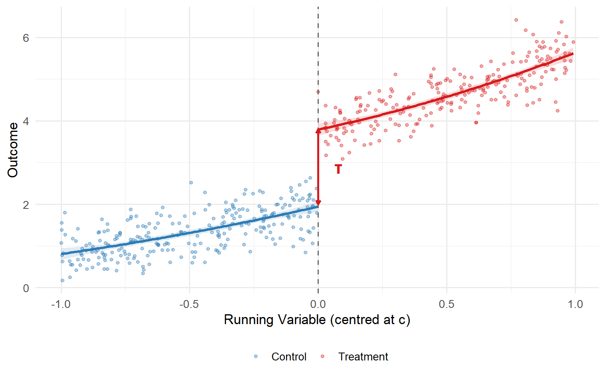
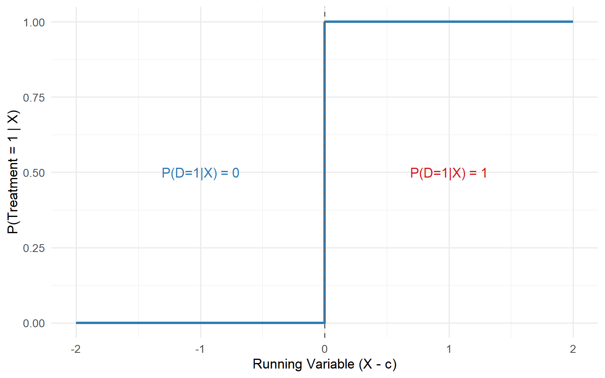
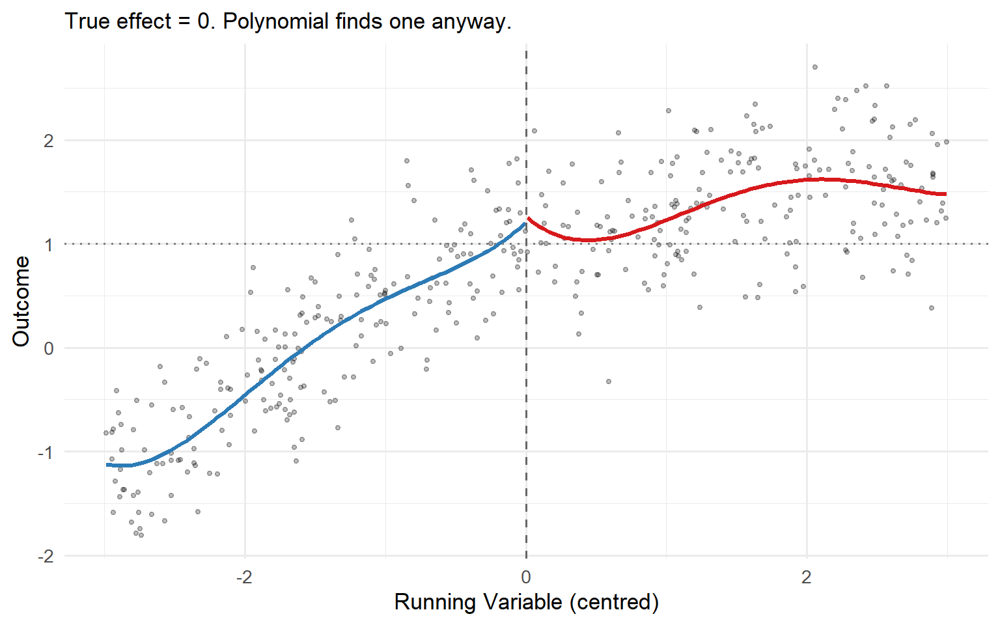
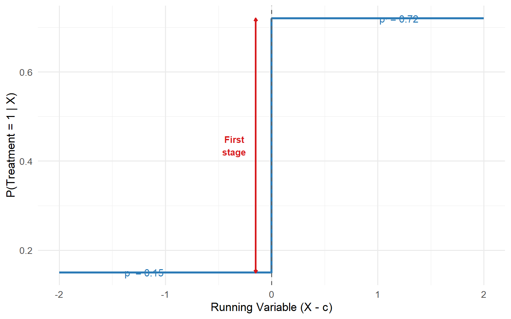
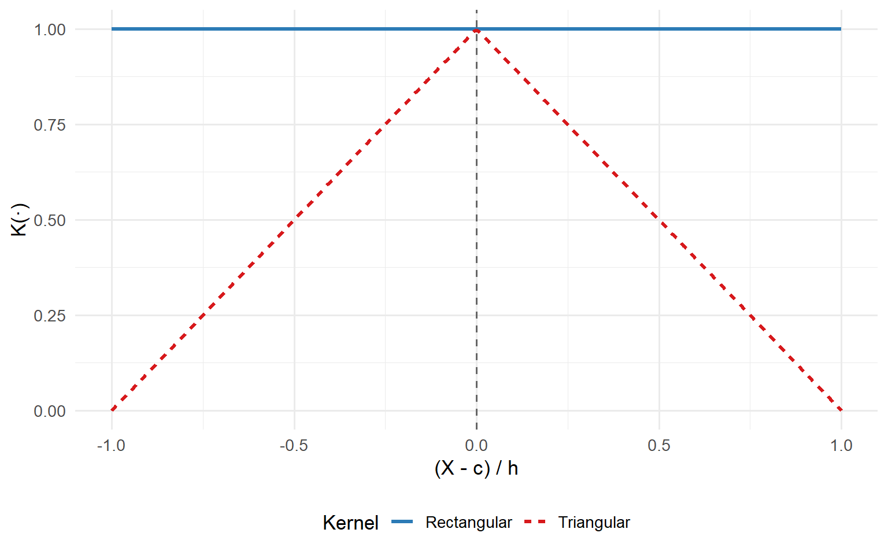

The Sharp Edge of the Cutoff: A Practitioner’s Guide to Regression Discontinuity Design
From the border jump to local randomisation: and everything in between
causal inference
econometrics
RDD
Part I: Intuition
Imagine you manage the analytics function at a large retailer. Your loyalty programme awards “Gold” status (and a 15% discount) to any customer who spends at least £5,000 in a calendar year. Customers who spend £4,998 get nothing. Customers who spend £5,002 get the discount for the entire next year. The business question: does Gold status actually change purchasing behaviour, or were those high spenders going to spend heavily anyway? The running variable is annual spend. The cutoff is £5,000. The discontinuity, if it exists, is the causal effect of the loyalty programme on future spending.
The Border Jump
Imagine you are driving south through San Diego on a clear afternoon. You pass through Chula Vista, then National City, then the winding ramps of San Ysidro. The neighbourhoods get a little quieter. Incomes drift downward: the further south you go, the lower household earnings tend to be. Sixteen miles of gradual, unremarkable decline. Geography, housing markets, commuting patterns, all of these push and pull on incomes in ways that change continuously as you move through space. Nothing surprising here.
Then you cross the border into Tijuana.
In a few footsteps, household income collapses to roughly $20,000, a drop of more than 60% from what you saw just north of the line (Huntington-Klein, 2021). Not a gentler slope. A sheer cliff. There is no smooth gradient that could explain a collapse of that magnitude across a distance you could cover on foot. Everything that was continuous suddenly snaps. The street changes, the currency changes, the institutional architecture of daily life changes. All of it, at one precise geographic coordinate.
An institutional rule, the border, is doing something that sits at the heart of one of the most compelling research designs in modern applied econometrics.
Natura Non Facit Saltum
There is a Latin principle with a long pedigree in natural philosophy: natura non facit saltum, nature does not make jumps. Gottfried Leibniz treated it as a foundational axiom of his Law of Continuity. Linnaeus inscribed it in his Philosophia Botanica in 1751. Charles Darwin invoked it repeatedly in On the Origin of Species to argue that biological change is gradual and incremental, never abrupt. Alfred Marshall placed it on the frontispiece of his Principles of Economics in 1890 as an endorsement of both evolutionary thought and the calculus of continuous change.
The intuition is simple: continuous processes produce continuous outcomes. Mountains erode slowly. Temperatures shift with latitude in smooth, predictable curves. A one-point increase in a student’s test score does not radically alter her academic trajectory. A one-foot step south does not halve your income.
When something does jump, it begs for explanation.
The Turtle on the Fencepost
Scott Cunningham, in Causal Inference: The Mixtape, makes the same point with an image you will not forget (Cunningham, 2021): if you see a turtle sitting on top of a fencepost, you know it did not get there by itself. Turtles wander. They climb slowly. But they do not levitate three feet into the air and balance on a wooden post. The turtle on the fencepost is a discontinuity in the natural order, and its very presence is evidence of an external cause. Someone placed it there.
The same logic governs data. When you plot an outcome against a continuous variable and observe a smooth, well-behaved relationship everywhere except at one precise point, where the outcome suddenly snaps up or down, you are looking at Cunningham’s turtle. An institutional rule, a policy threshold, a hard eligibility cutoff: some human-made fencepost caused that jump.
This is the philosophical bedrock of Regression Discontinuity Design.
The Three Ingredients
Every RDD application is built from three components.
The Running Variable (sometimes called the forcing variable or the assignment score) is the continuous measure that orders units and determines who receives treatment. It could be a vote share, an exam score, a credit rating, a blood-alcohol reading, or a geographic coordinate. The essential feature is that it varies continuously on its own. It does not jump.
The Cutoff is the precise, known threshold in the running variable that triggers treatment. Every unit above the cutoff receives the treatment; every unit below does not. The cutoff is always set by an institutional rule, never by nature. A test score of 70 to qualify for a remedial programme. A vote share above 50% to win an election. A blood-alcohol content above 0.08 to face a DWI charge. The cutoff is the fencepost.
The Discontinuity is the jump in the outcome at the cutoff. If the running variable has a smooth, continuous relationship with the outcome everywhere except at the threshold, and then abruptly shifts right at that point, you are looking at the turtle. The jump is the signature of the institutional rule.
Notice what this framework implies. The San Diego–Tijuana border did not cause the smooth income gradient across San Diego. It caused the cliff-edge drop at the crossing. The continuous part of the data is background noise; the discontinuity is the signal. And the signal is causal.
NoteKey Terms at a Glance
Running Variable: the continuous variable that determines treatment assignment (vote share, exam score, income level, geographic coordinate). Also called the forcing variable or the assignment score.
Cutoff: the threshold in the running variable that triggers treatment. Always set by an institutional rule; never by nature.
Discontinuity: the jump in the outcome at the cutoff. If nature does not make jumps, a discontinuity is causal evidence of an institutional rule.
Local Randomisation: the result, formalised by Lee (2008), that units just above and just below the cutoff are as good as randomly assigned, because fine-grained variation near the threshold is driven by chance rather than by systematic self-selection.
Part II: Sharp RDD
You are the retailer from Part I. Your loyalty programme awards Gold status at exactly £5,000 of annual spend, no discretion, no exceptions. Every customer who crosses the threshold receives the discount; every customer who falls short does not. That is a Sharp RDD. The rule is absolute.
The Formal Setup
In a Sharp RDD, the cutoff is a binary switch. Cross it and you receive the treatment with probability one. Stay below it and the probability is exactly zero. No exceptions, no discretion, no leakage:
\[ \lim_{x \downarrow c} P(D_i = 1 \mid X_i = x) = 1, \qquad \lim_{x \uparrow c} P(D_i = 1 \mid X_i = x) = 0 \]
Treatment status is a deterministic step function of the running variable:
\[ D_i = \mathbb{1}(X_i \geq c) \]
That \(\mathbb{1}(\cdot)\) is doing something crucial: it guarantees that the probability of treatment jumps discontinuously from exactly zero to exactly one at the threshold. No intermediate values, no partial compliance. The plot of \(P(D=1|X)\) against \(X\) is a perfect step function.

The Identification Result
Under the assumption that the conditional expectation functions \(\mathbb{E}[Y_i(0) \mid X_i = x]\) and \(\mathbb{E}[Y_i(1) \mid X_i = x]\) are continuous in \(x\) at \(c\) (the core identifying assumption of any RD design), the treatment effect is simply the vertical gap in the observed outcome regression at the cutoff (Hahn, Todd, and van der Klaauw, 2001; Imbens and Lemieux, 2008):
\[ \tau_{\text{SRD}} = \lim_{x \downarrow c} \mathbb{E}[Y_i \mid X_i = x] \;-\; \lim_{x \uparrow c} \mathbb{E}[Y_i \mid X_i = x] \;=\; \mathbb{E}[Y_i(1) - Y_i(0) \mid X_i = c] \]
No scaling, no correction, no IV. The jump is the effect, but only for the subpopulation at \(X_i = c\). Not for the full population, not even for the average treated unit. Just for the people sitting right at the margin. That locality is the price of near-randomisation, and it is a price worth paying.
NoteThe Continuity Assumption Is Doing the Heavy Lifting
Continuity says that, absent the treatment rule, the relationship between the outcome and the running variable would have been smooth at \(c\). There is nothing special about \(c\) except the assignment rule itself. If this holds, any break we observe at \(c\) can only be attributed to the treatment. In practice, you can never prove continuity; you can only look for evidence against it. Part VII will give you the full diagnostic toolkit.
No Overlap at the Cutoff
Notice something that distinguishes RDD from every other causal inference strategy: there is zero overlap at the cutoff. Every unit with \(X_i \geq c\) is treated; every unit with \(X_i < c\) is not. There are no “control” units at \(X = c\) and no “treated” units at \(X = c^-\). The identification comes entirely from the limit, from approaching the cutoff from either side and comparing the extrapolated values. This is why RDD is sometimes called a “local experiment”: the comparison is valid only in the immediate neighbourhood of the threshold, and credibility degrades as you move away from it.
The Parametric Approach and Its Dangers
For a long time, the standard approach to RDD estimation was this: take your entire dataset, fit a high-order polynomial (typically 4th or 5th degree) to the running variable on each side of the cutoff, and read off the gap where the two curves meet at the threshold.
It sounds rigorous. It uses all the data. It produces smooth, impressive-looking curves. It is a terrible idea.
WarningStop Using High-Order Global Polynomials
Gelman and Imbens (2019) deliver the definitive case against this practice. The core problem is not subtle: a polynomial fitted to the entire support of the running variable is optimised to describe a global shape. But RDD is a local design. It asks one question: what happens right here, at the cutoff?
Data points far from the threshold (units at \(x = c \pm 30\), \(c \pm 50\)) have no business influencing your estimate at \(x = c\). A global polynomial gives them a seat at the table anyway. Worse, high-order polynomials behave erratically near boundaries: they oscillate, overshoot, and can manufacture a discontinuity where none exists, or obscure one that does.

The practical consequence is equally damaging. Change the polynomial degree from 3 to 4, or from 4 to 5, and your treatment effect estimate can swing dramatically. You are not measuring a feature of the data. You are measuring a feature of an arbitrary modelling choice. Imbens and Lemieux (2008) put it plainly: global polynomial methods “put effort into estimating the regression functions in areas far away from the discontinuity point that are of no interest in the current setting.”
The antidote, local polynomial regression, is the subject of Part V.
Part III: The Local Randomisation Theorem
You have the anatomy: running variable, cutoff, discontinuity. The Sharp design tells you the jump is the effect. But why should you believe that the jump is causal? What stops some confounding force from also shifting at exactly the cutoff? The answer is the deepest theoretical result in the RDD literature, and it is what separates RDD from a clever design trick into a genuine identification argument.
RDD vs Selection on Observables
If you have spent time with matching or propensity score methods, you know the implicit promise those designs ask you to make. The entire enterprise of IPW, nearest-neighbour matching, or Mahalanobis distance rests on one assumption: conditional ignorability. Once you condition on a rich enough set of observed covariates \(\mathbf{W}\), treatment assignment is as good as random. Formally:
\[ (Y_i(0),\, Y_i(1)) \perp\!\!\!\perp D_i \;\Big|\; \mathbf{W}_i \]
That is a global assumption, and it has to hold across the entire support of \(\mathbf{W}\). You are claiming your covariate set is so complete that nothing unmeasured jointly determines treatment selection and the outcome. No dataset ever satisfies this requirement, and the credibility of your estimate is permanently hostage to variables you cannot see.
RDD does not ask you to make that promise. In a Sharp RDD, treatment is mechanically determined by whether \(X\) crosses \(c\). The question becomes narrowly local: are the units just above and just below the threshold already comparable, without any adjustment at all? As we will see, the answer is yes, not by assumption, but as a consequence of how the running variable is generated.
NoteThe Key Distinction
Matching / IPW: requires global conditional ignorability. The assumption must hold everywhere in the support of \(\mathbf{W}\). Untestable by design.
RDD: requires local continuity. Potential outcomes evolve smoothly at a single point, \(x = c\). Weaker, narrower, and partially testable.
Continuity of Potential Outcomes Formalised
The formal identification engine of the Sharp RDD is the continuity assumption. Define the conditional expectation of the untreated potential outcome as \(\mu_0(x) = \mathbb{E}[Y_i(0) \mid X_i = x]\) and the treated potential outcome as \(\mu_1(x) = \mathbb{E}[Y_i(1) \mid X_i = x]\). The identifying assumption is:
\[ \mu_0(x) \;\text{ and }\; \mu_1(x) \;\text{ are continuous in } x \text{ at } x = c. \]
In words: in the absence of treatment, the outcome would have evolved smoothly across the cutoff. No discrete jump, no sudden shift in the conditional mean. And the treated potential outcome curve would have been equally smooth.
If both curves are continuous, identification follows immediately. Any observed discontinuity in \(\mathbb{E}[Y \mid X = x]\) at the threshold must come entirely from the treatment itself. The treatment effect at the cutoff is then:
\[ \tau_{\text{SRD}} = \lim_{x \downarrow c} \mathbb{E}[Y \mid X = x] \;-\; \lim_{x \uparrow c} \mathbb{E}[Y \mid X = x] = \mu_1(c) - \mu_0(c). \]
This result, formalised by Hahn, Todd, and van der Klaauw (2001), delivers causal identification without instruments, without panels, and without any global ignorability assumption. But it does require continuity, and continuity is itself a claim about behaviour. Why would potential outcomes be smooth precisely at the threshold that determines treatment?
Lee’s Imprecise Control Definition
The deepest theoretical result in the RDD literature is due to Lee (2008). Stated plainly:
If individuals cannot precisely control the running variable, then in a neighbourhood around the cutoff, treatment assignment is as good as randomly assigned.
Lee and Lemieux (2010) formalise this with a structural model. The data-generating process is:
\[ Y_i = D_i\tau + \mathbf{W}_i\delta_1 + U_i, \qquad D_i = \mathbb{1}[X_i \geq 0], \qquad X_i = \mathbf{W}_i\delta_2 + V_i \]
where \(\mathbf{W}_i\) is the vector of all pre-determined observable characteristics, \(U_i\) captures unobserved heterogeneity in the outcome, and \(V_i\) is a stochastic error in the determination of \(X_i\). The threshold has been normalised to zero. What makes this model unusually permissive is what it does not assume: no exclusion restrictions on \(\mathbf{W}\), no assumptions about the correlations among \(\mathbf{W}\), \(U\), and \(V\), and no requirement that \(\mathbf{W}\) be exogenous. The model imposes almost nothing.
Everything hangs on one definition:
NoteDefinition: Imprecise Control (Lee, 2008)
Individuals have imprecise control over \(X\) when, conditional on \(W_i = w\) and \(U_i = u\), the density of \(V_i\) (and hence of \(X_i\)) is continuous at the threshold.
Formally: \(f(x \mid W = w,\, U = u)\) is continuous in \(x\) at \(x = 0\), for every \((w, u)\).
Note what this allows. A more able student can shift her score distribution to the right (higher mean, perhaps different shape) reflecting the returns to effort and ability. The density for a Type A student looks different from the density for a Type B student. What the definition rules out is a discontinuity in that density at the cutoff: no individual, regardless of ability and incentives, can place probability mass just above the threshold while placing zero mass just below it. The stochastic component \(V_i\) (luck, noise, imprecision in the test) cannot be engineered away.
The key word in this entire literature is precise, not manipulation. In virtually every real-world RDD application, individuals exert some influence over the running variable. Students study for exams. Politicians campaign for votes. Firms can adjust the metrics that determine regulatory thresholds. That is fine; it poses no threat to identification. What would destroy the design is the ability to precisely sort to one side of the threshold.
The Bayes’ Rule Proof
Imprecise control would be a merely plausible condition if it did not have a striking econometric consequence. Here is where Bayes’ Rule converts a behavioural assumption into a randomisation result.
We want to know whether the joint distribution of \((W, U)\) (all observable and unobservable characteristics) varies continuously across the cutoff. This is precisely the balance condition you would check in a randomised experiment to verify that randomisation worked. By Bayes’ Rule:
\[ \underbrace{\Pr[W = w,\, U = u \mid X = x]}_{\text{posterior of confounders given score}} = \frac{\overbrace{f(x \mid W = w,\, U = u)}^{\text{likelihood: continuous by imprecise control}} \;\cdot\; \overbrace{\Pr[W = w,\, U = u]}^{\text{prior: fixed, does not depend on } x}}{\underbrace{f(x)}_{\text{marginal: continuous as mixture}}} \]
The prior \(\Pr[W = w,\, U = u]\) is fixed; it does not depend on \(x\). The marginal density \(f(x)\) in the denominator is continuous whenever individual conditional densities are continuous (it is simply a mixture over the population). The only term that depends on individual behaviour is \(f(x \mid W = w,\, U = u)\) in the numerator, and the imprecise control assumption says that term is continuous in \(x\) at the threshold.
Therefore, the entire right-hand side is continuous in \(x\) at \(x = 0\). Which means:
\[ \Pr[W = w,\, U = u \mid X = x] \;\text{ is continuous in } x. \]
In the limit, as we examine smaller and smaller neighbourhoods around the cutoff, the distribution of every pre-determined characteristic (observed and unobserved alike) is identical on both sides. The identification result follows directly: the discontinuity gap is \(\tau\), because the bias term collapses to zero:
\[ \underbrace{\mathbb{E}[Y \mid X=0^+] - \mathbb{E}[Y \mid X=0^-]}_{\text{observed gap}} = \\ \tau + \sum_{w,u}(w\delta_1 + u)\underbrace{\left[\Pr[W=w,U=u\mid X=0^+] - \Pr[W=w,U=u\mid X=0^-]\right]}_{=\,0 \text{ by continuity}} \]
NoteThe Local Randomisation Theorem (Lee, 2008)
If individuals have imprecise control over \(X\), then \(\Pr[W = w,\, U = u \mid X = x]\) is continuous in \(x\) at \(x = 0\):
Treatment is “as good as randomly assigned” in a neighbourhood around the cutoff.
The student who scored 79.8 and the student who scored 80.2 are, in expectation, statistical twins. They differ only in the realisation of \(V\), the stochastic noise that neither of them controlled.
Local Randomisation vs Continuity-Based Frameworks
Two inferential frameworks coexist in the modern RDD literature, and they rest on different, though compatible, assumptions.
The continuity-based framework (Hahn, Todd, and van der Klaauw, 2001; Calonico, Cattaneo, and Titiunik, 2014) requires that \(\mu_0(x)\) and \(\mu_1(x)\) are continuous at \(c\). Estimation uses local polynomial regression, and inference relies on large-sample approximations. This is the default approach and the one implemented in rdrobust.
The local randomisation framework (Cattaneo, Idrobo, and Titiunik, 2020, 2024) assumes that, within a small window \(\mathcal{W} = [c - w, c + w]\), the running variable is as good as randomly assigned. Estimation uses Fisherian randomisation inference with a finite-sample exact \(p\)-value. This is the framework implemented in rdlocrand.
The two frameworks are complementary. The continuity-based approach gives you point estimation and confidence intervals. The local randomisation approach gives you exact finite-sample tests and a principled way to select the window \(\mathcal{W}\) via covariate balance. In practice, run both and confirm they agree.
Part IV: Fuzzy RDD
Your loyalty programme does not always work as planned. Some customers who cross £5,000 never activate their Gold discount. Others find workarounds to get the discount without truly qualifying. The rule shifts the probability of treatment; it does not guarantee it. This is a Fuzzy RDD, and it is the design that connects RDD to Instrumental Variables.
Imperfect Compliance and the Probability Jump
In a Fuzzy RDD, crossing the cutoff produces a discontinuity in \(P(D_i = 1 \mid X_i = x)\), but the jump is strictly less than one:
\[ 0 \;<\; \lim_{x \downarrow c} P(D_i = 1 \mid X_i = x) \;-\; \lim_{x \uparrow c} P(D_i = 1 \mid X_i = x) \;<\; 1 \]
The threshold shifts incentives and probabilities, not certainties. The parallel to experimental designs is exact: Sharp RDD is a randomised experiment with perfect compliance; Fuzzy RDD is one with imperfect compliance where only the intent to treat is randomised (Lee and Lemieux, 2010).

The Wald Estimator
The consequence is immediate and important. The raw jump in the outcome at the cutoff is no longer the treatment effect. It is an Intent-to-Treat (ITT) effect, the effect of being eligible for treatment, diluted by the fraction of eligible units that do not actually comply. To recover the causal effect of actually receiving the treatment, we need to scale it up.
The estimand is the Wald ratio of two discontinuities:
\[ \tau_{\text{FRD}} = \frac{\overbrace{\lim_{x \downarrow c} \mathbb{E}[Y_i \mid X_i = x] \;-\; \lim_{x \uparrow c} \mathbb{E}[Y_i \mid X_i = x]}^{\text{Reduced-form jump (ITT)}}}{\underbrace{\lim_{x \downarrow c} P(D_i = 1 \mid X_i = x) \;-\; \lim_{x \uparrow c} P(D_i = 1 \mid X_i = x)}_{\text{First-stage jump (compliance rate)}}} \]
The numerator is the reduced-form jump in the outcome, the ITT. The denominator is the first-stage jump in treatment take-up, how much compliance the cutoff actually generates. Their ratio scales the ITT up to recover the per-unit causal effect for those whose treatment status was genuinely altered by crossing the threshold.
WarningThe Golden Rule of Fuzzy RDD
The jump in the outcome at the cutoff is not the treatment effect. It is the ITT: the effect of assignment, conflated with imperfect compliance. Reporting it as the treatment effect is one of the most common errors in applied RD work.
The IV Connection
A Fuzzy RDD is, at its core, an Instrumental Variable design. The cutoff crossing is the instrument. The mapping is exact:
| IV Concept | Fuzzy RDD Equivalent |
|---|---|
| Instrument \(Z_i\) | Cutoff crossing: \(\mathbb{1}\{X_i \geq c\}\) |
| Endogenous variable \(D_i\) | Actual treatment received |
| First stage: \(Z_i\) predicts \(D_i\) | Jump in \(P(D_i = 1 \mid X_i = x)\) at \(c\) |
| Exclusion restriction | Crossing \(c\) affects \(Y_i\) only through \(D_i\) |
| Monotonicity | Crossing \(c\) cannot push some units into treatment and others out |
Hahn, Todd, and van der Klaauw (2001) showed formally that the Fuzzy RD estimator is numerically identical to a Two-Stage Least Squares (2SLS) estimator when you use \(\mathbb{1}\{X_i \geq c\}\) as the excluded instrument with the same bandwidth for both stages. The math does not care whether you call it “Fuzzy RD” or “local IV”; it is the same object.
flowchart LR
Z["Z = 1{X ≥ c}<br/>Cutoff crossing"] -->|"First stage<br/>P(D) jumps at c"| D["D<br/>Treatment received"]
D -->|"Causal effect<br/>τ_FRD"| Y["Y<br/>Outcome"]
U["U<br/>Unobserved confounders"] --> D
U --> Y
Z -.-x|"Exclusion restriction"| Y
style Z fill:#2c7bb6,color:#fff
style D fill:#d7191c,color:#fff
style Y fill:#1a9641,color:#fff
style U fill:#E67E22,color:#fff
The Fuzzy RDD as an IV DAG: the cutoff crossing is the instrument, treatment is endogenous, and the exclusion restriction bars a direct path from Z to Y.
The Four Potential Outcomes
In a Fuzzy RDD, each unit has four potential outcomes, two for each value of the instrument \(Z\), each interacting with the treatment \(D\):
- \(Y_i(1, 1)\): outcome if above cutoff and treated
- \(Y_i(1, 0)\): outcome if above cutoff and not treated
- \(Y_i(0, 1)\): outcome if below cutoff and treated
- \(Y_i(0, 0)\): outcome if below cutoff and not treated
Only two of these are ever observed for each unit. The Wald estimator identifies the LATE for compliers, those whose treatment status is switched by the instrument.
Compliance Types and LATE
When compliance is imperfect, the population near the cutoff splits into four types (Angrist, Imbens, and Rubin, 1996):
- Compliers: take the treatment if and only if they cross the cutoff. They are moved by the rule.
- Always-takers: receive the treatment regardless of which side of \(c\) they fall on.
- Never-takers: refuse the treatment regardless of which side of \(c\) they fall on.
- Defiers: take the treatment when below \(c\) and refuse it when above \(c\).
Under monotonicity (no defiers), always-takers and never-takers are invisible to the instrument. Their treatment status does not change at \(c\), so they contribute nothing to the identification. The Fuzzy RD Wald estimator recovers the Local Average Treatment Effect (LATE) exclusively for compliers, evaluated at the cutoff (Imbens and Angrist, 1994):
\[ \tau_{\text{FRD}} = \mathbb{E}[Y_i(1) - Y_i(0) \mid \text{complier},\; X_i = c] \]
This is a doubly local effect: local in the running variable (\(X_i \approx c\)) and local in compliance type (compliers only). Both dimensions of locality are non-negotiable features of the design, not pathologies to be apologised for.
NoteThe Double Locality Is Intellectual Honesty, Not a Weakness
We are not pretending to estimate an effect for everyone. We are estimating it for the marginal decision-makers: the people whose treatment status is genuinely moved by the rule. In the financial aid example (van der Klaauw, 2002), these are students who enrol in college because they received the larger offer, and would not have enrolled otherwise.
The Weak First-Stage Problem
Since \(\tau_{\text{FRD}}\) is a ratio, it inherits all the standard IV pathologies. If the denominator (the jump in \(P(D_i = 1 \mid X_i)\) at the cutoff) is zero, the estimator is undefined. If it is small but nonzero, you are in weak instrument territory: the Gaussian approximations underlying standard errors break down, confidence intervals become unreliable, and the point estimate can be wildly sensitive to bandwidth choice.
Cattaneo, Idrobo, and Titiunik (2024) recommend a first-stage F-statistic of at least 20 before trusting the ratio estimator, a stricter bar than the traditional IV rule of thumb of 10 (Stock and Yogo, 2005). If your first stage is weak, the honest path is to report only the ITT effect and acknowledge that scaling it up is not credible. A clean ITT is worth more than a noisy and unstable LATE.
Always plot \(P(D_i = 1 \mid X_i)\) against \(X_i\) before touching the outcome regression. If the jump in treatment probability is not visible in the graph, it almost certainly is not large enough to support a reliable Fuzzy RD.
Part V: Estimation: Local Polynomial Regression
Your identification is conceptually solid. Here is the problem: that means nothing if the estimation toolkit is broken. And for most of the first decade of modern RDD practice, it was, quietly, systematically, and in a way that almost no one noticed until Calonico, Cattaneo, and Titiunik (2014) forced the issue.
The Bias-Variance Tradeoff
Committing to local linear regression does not end the problem; it displaces it. The central estimation choice is now the bandwidth \(h\): how wide a window to use on each side of the cutoff. This is the classic nonparametric bias-variance tradeoff.
flowchart TD A["Bandwidth Choice: h"] --> B["Narrow h"] A --> C["Wide h"] B --> D["Low bias<br/>(linear approx. plausible)"] B --> E["High variance<br/>(few observations)"] C --> F["Low variance<br/>(many observations)"] C --> G["High bias<br/>(curvature contaminates estimate)"] D --> H["Wide CIs,<br/>potentially insignificant"] E --> H F --> I["Narrow CIs,<br/>but potentially biased"] G --> I style A fill:#E67E22,color:#fff style H fill:#d7191c,color:#fff style I fill:#2c7bb6,color:#fff
The bias-variance tradeoff in RDD bandwidth selection: narrow bandwidths reduce bias but increase variance, and vice versa.
The mean squared error of the local linear estimator decomposes as:
\[ \text{MSE}[\hat{\tau}(h)] = \underbrace{h^4 \cdot B^2(h)}_{\text{Bias}^2} + \underbrace{\frac{1}{nh} \cdot V(h)}_{\text{Variance}} \]
Minimising over \(h\) gives the MSE-optimal bandwidth, which scales as \(h_{\text{MSE}} \propto n^{-1/5}\). At first glance, this solves the problem. It does not. It makes it worse, in a way that went unnoticed for years.
Separate Local Linear Regressions
The correct formulation (the one matching rdrobust) fits separate local linear regressions on each side of the cutoff. On each side we solve a weighted least-squares problem:
\[ \min_{\alpha_-, \beta_-} \sum_{i:\, X_i \in [c-h,\, c)} \left(Y_i - \alpha_- - \beta_-(X_i - c)\right)^2 K\!\left(\frac{X_i - c}{h}\right) \]
\[ \min_{\alpha_+, \beta_+} \sum_{i:\, X_i \in (c,\, c+h]} \left(Y_i - \alpha_+ - \beta_+(X_i - c)\right)^2 K\!\left(\frac{X_i - c}{h}\right) \]
where \(K(\cdot)\) is a kernel function that weights observations by proximity to the cutoff. The treatment effect estimate is then simply the difference in intercepts:
\[ \hat{\tau} = \hat{\alpha}_+ - \hat{\alpha}_- \]
Why linear, and not just local means? The answer is the boundary problem. At the cutoff, we are at the boundary of each sub-sample. With only one-sided data, a local average picks up not just the level of the regression function but also its slope, producing a bias of order \(h\). A local linear fit absorbs that slope through \(\hat{\beta}\), reducing the bias from order \(h\) to order \(h^2\) (Porter, 2003; Imbens and Lemieux, 2008).
Kernel Functions
The kernel \(K(\cdot)\) determines how observations are weighted within the bandwidth. The two most common choices:
Triangular kernel: \(K(u) = (1 - |u|) \cdot \mathbb{1}(|u| \leq 1)\). Tapers linearly to zero at the boundary. This is the default in
rdrobustand the recommended choice for RDD, because the triangular kernel is boundary-optimal: it minimises the MSE of the point estimator at the cutoff (Cheng, Fan, and Marron, 1997).Rectangular (uniform) kernel: \(K(u) = \mathbb{1}(|u| \leq 1)\). Gives equal weight to all observations within the bandwidth. Simpler, but not boundary-optimal.

The CCT (2014) Coverage Failure Story
Here is the uncomfortable truth that even sophisticated applied researchers did not fully appreciate until CCT (2014) made it impossible to ignore.
The MSE-optimal bandwidth is deliberately chosen to be wide enough that some bias remains in the estimator. That is the entire point of the optimisation: accept a little bias in exchange for a substantial reduction in variance, because that tradeoff minimises the overall MSE. By construction:
\[ n \cdot h_{\text{MSE}}^5 \rightarrow c \in (0, +\infty) \]
The leading bias term does not vanish. It converges to a fixed fraction of the standard error. Now, for conventional confidence intervals to be valid (for a nominal 95% CI to actually cover the true parameter 95% of the time) you need the bias to disappear asymptotically. The formal condition is \(nh^5 \rightarrow 0\), known as undersmoothing: the bandwidth must shrink fast enough that the bias dies faster than the sampling variability. MSE-optimal bandwidths violate this condition by design.
For years, applied researchers used MSE-optimal bandwidths to compute point estimates, then calculated confidence intervals using standard errors that assumed zero bias. The bandwidth was chosen to tolerate bias; the inference was conducted as if there were none.
CCT (2014) document the consequences. In their simulations, using MSE-optimal bandwidths with conventional confidence intervals produced empirical coverage rates well below the nominal 95%: routinely 10 to 20 percentage points short, and in the worst configurations dropping into the mid-70s. A confidence interval that claims to work 95 times out of 100 but actually works 75 times out of 100.
WarningThe Undersmoothing Escape Hatch Does Not Work
The pre-2014 literature offered one fix: undersmoothing. Choose a bandwidth narrower than MSE-optimal, so that \(nh^5 \rightarrow 0\), and the bias vanishes asymptotically. Conventional inference is then valid.
The problem is that undersmoothing is arbitrary. There is no principled data-driven rule for how much to undersmooth. How narrow is narrow enough? The answer is always ad hoc. And undersmoothing artificially inflates standard errors, discarding information you paid to collect. You cannot escape the dilemma by choosing a different ad hoc bandwidth. You need a different procedure entirely.
The CCT Solution: Bias as a First-Class Citizen
Calonico, Cattaneo, and Titiunik (2014), henceforth CCT, provided the solution. Instead of pretending the bias is zero or choosing a bandwidth to make it approximately zero, they do two things simultaneously.
Step 1: Estimate and subtract the bias. The leading misspecification bias of the local linear estimator depends on the second derivatives of the conditional expectation functions at the cutoff. CCT estimate these by fitting a local quadratic regression with a separate pilot bandwidth \(b\), typically wider than \(h\) to ensure stable estimation of the curvature. This gives a plug-in bias estimate \(\hat{B}(h, b)\), and the bias-corrected estimator is:
\[ \hat{\tau}^{\text{bc}}(h, b) = \hat{\tau}(h) - h^2 \cdot \hat{B}(h, b) \]
This step alone is not new; bias-corrected nonparametric estimators have existed for decades. The reason earlier practitioners got it wrong is what came next.
Step 2: Adjust the standard errors for the uncertainty in bias estimation. This is CCT’s key contribution, and it is what separates a valid procedure from a naive one. The bias correction is itself a random quantity: \(\hat{B}(h, b)\) is estimated from the data, so it carries its own sampling variability, correlated with the original point estimate. If you subtract the estimated bias but keep the original standard errors, your confidence interval is still mis-sized.
CCT derive the full variance of the bias-corrected estimator. The robust bias-corrected variance incorporates the original estimation variance plus the variability of the bias correction:
\[ V^{\text{bc}}(h, b) = V(h) + C^{\text{bc}}(h, b) \]
where \(C^{\text{bc}}(h, b)\) captures the additional variability introduced by estimating the bias, and depends on the ratio \(\rho = h/b\). The robust variance is therefore inflated relative to the conventional formula: the interval is wider because it honestly accounts for all the uncertainty in the procedure. This is not a bug. It is the price of valid inference.
The robust bias-corrected confidence interval is then:
\[ \text{CI}_{\text{rbc}} = \left[\hat{\tau}^{\text{bc}} \pm z_{1-\alpha/2} \cdot \sqrt{V^{\text{bc}}(h, b)}\right] \]
Calonico, Cattaneo, and Farrell (2018, 2020) establish via valid Edgeworth expansions that the coverage error of the robust bias-corrected CI decays at rate:
\[ \text{Coverage error} = O(n^{-1}) \quad \text{vs.} \quad O(n^{-2/5}) \text{ for conventional} \]
a substantial improvement in the accuracy of inference.
There is also an elegant conceptual shortcut. When the main bandwidth and the pilot bandwidth are equal (\(h = b\)), CCT (2014) show that the bias-corrected estimator \(\hat{\tau}^{\text{bc}}(h, h)\) is numerically identical to a local quadratic regression at bandwidth \(h\), but with the robust variance formula rather than the naive one. The estimation step upgrades from linear to quadratic; the inference step upgrades from conventional to robust. Both upgrades are necessary. Neither suffices alone.
rdrobust Output
The rdrobust output presents two estimators side by side:
| Estimator | Point Estimate | Std. Error | 95% CI |
|---|---|---|---|
| Conventional | \(\hat{\tau}\) | \(\sqrt{V}\) | Narrow: valid only under undersmoothing |
| Robust | \(\hat{\tau}^{\text{bc}}\) | \(\sqrt{V^{\text{bc}}}\) | Wider: valid under MSE-optimal bandwidth |
The Robust interval is wider by construction. That is not a deficiency. It is the correct interval.
WarningALWAYS Report the Robust Row
Never report an RDD estimate without rdrobust or an equivalent implementation of CCT-style robust bias-corrected inference. The Conventional row uses the MSE-optimal bandwidth but then computes standard errors under the assumption of zero bias, an assumption that is violated by construction. The Robust row corrects for this.
In practice: the Robust confidence interval is wider than the Conventional one. That is the honest price of using an MSE-optimal bandwidth. Reporting the Conventional interval because it is tighter is not a stylistic choice. It is a methodological error.
Bandwidth Selectors
The default bandwidth selector (mserd) minimises the MSE of the point estimator. An alternative (cerrd) minimises the coverage error rate of the confidence interval directly, which tends to produce slightly wider bandwidths and is preferable when inference, rather than point estimation, is the primary goal. For falsification tests on pre-treatment covariates, CER-optimal bandwidths are the natural choice.
The RD Plot with rdplot()
Code
library(rdrobust)
# The canonical visualisation — mandatory before any estimation
rdplot(y = outcome, x = running_var, c = cutoff,
title = "RD Plot",
x.label = "Running Variable (centred at c)",
y.label = "Outcome")What you are looking for: the two fitted curves should slam into the cutoff line at visibly different heights. A clean gap is your treatment effect, visualised.
Part VI: Bandwidth, Sensitivity, and Covariates
You have your rdrobust estimate. The Robust row is significant. Before you draft the abstract, you need to handle three things that separate papers that survive review from papers that die on specification questions: bandwidth sensitivity, donut-hole adjustments, and covariate adjustment. The last one is where well-intentioned researchers routinely make avoidable mistakes.
Bandwidth Sensitivity with R Code
No data-driven bandwidth selector should be trusted blindly. Huntington-Klein (2021) documents a telling example from Fetter (2013): the same data, the same local linear method, and a cross-validation bandwidth of 12 quarters produced an estimate of 0.170, while rdrobust’s optimal bandwidth of 3.39 quarters produced 0.518. A threefold difference from the bandwidth choice alone.
The minimum acceptable robustness check is to re-estimate at half and double the optimal bandwidth:
Code
library(rdrobust)
# Optimal bandwidth
h_opt <- rdbwselect(y = outcome, x = running_var, c = cutoff)$bws[1, 1]
# Main specification
rdrobust(y = outcome, x = running_var, c = cutoff, h = h_opt) |> summary()
# Half bandwidth — more bias-free, less precise
rdrobust(y = outcome, x = running_var, c = cutoff, h = h_opt / 2) |> summary()
# Double bandwidth — more precise, more bias risk
rdrobust(y = outcome, x = running_var, c = cutoff, h = h_opt * 2) |> summary()If the estimated effect is stable across this range (same sign, roughly similar magnitude, not crossing zero) you are on solid ground. If it flips sign or loses significance when you nudge the window, you have a fragility problem, not a causal effect.
Donut-Hole RDD
Sometimes there is reason to suspect that observations immediately adjacent to the cutoff are problematic, perhaps because of rounding, heaping, or administrative manipulation that does not show up in the density test but still contaminates the very nearest data points. A donut-hole RDD drops observations within a small radius \(\delta\) of the cutoff and estimates the discontinuity using only data at distance \([\delta, h]\) on each side. The tradeoff is transparent: you lose the observations closest to the threshold (where the linear approximation is best), but you gain protection against local contamination. If the estimate is robust to a small donut hole, that is reassuring. If it collapses, the finding was riding on a handful of potentially contaminated points.
Covariate Adjustment
You Do Not Need Covariates for Identification
One point is worth clearing up immediately.
You do not need covariates to identify the RD treatment effect.
In a valid RD, the cutoff already guarantees that units just above and just below the threshold are, in expectation, exchangeable on every pre-determined characteristic. The design is locally as good as random. Covariates play zero role in that argument.
So why bother including them? Precision. If \(Z_i\) is correlated with the outcome, including it soaks up residual variance and tightens your confidence intervals, without touching the point estimate in expectation. In Calonico, Cattaneo, Farrell, and Titiunik’s (2019) reanalysis of the Head Start mortality data (Ludwig and Miller, 2007), adding nine pre-determined census covariates left the point estimate almost unchanged (−2.47 vs. −2.41) but shrank the 95% confidence interval by nearly 10%.
The Additive Separable Specification
The specification advocated by Calonico et al. (2019) is:
\[ Y_i = \alpha + \tau D_i + f(X_i) + Z_i'\gamma + \varepsilon_i \]
where \(D_i\) is the treatment dummy, \(f(X_i)\) is the local polynomial in the running variable, and \(Z_i\) is your vector of pre-determined covariates entering with a single coefficient vector \(\gamma\), the same above and below the threshold.
WarningTHE INTERACTION TRAP
You might be tempted to run a “flexible” specification that lets the covariates have different effects on each side of the cutoff:
\[ Y_i = \alpha + \tau D_i + f(X_i) + (1-D_i) Z_i'\gamma^- + D_i Z_i'\gamma^+ + \varepsilon_i \]
Do not do this.
Calonico et al. (2019) prove in their Lemma 1 that this interaction estimator, \(\check{\tau}\), converges to:
\[ \check{\tau} \xrightarrow{p} \tau - \underbrace{\left(\mu_{Z+}'\gamma_{Y+} - \mu_{Z-}'\gamma_{Y-}\right)}_{\text{bias: needs both covariate balance AND equal slopes}} \]
The second term is a bias. It vanishes only if both covariate balance holds (\(\mu_{Z+} = \mu_{Z-}\)) and the best linear projection of the covariates on the outcome is identical on each side (\(\gamma_{Y+} = \gamma_{Y-}\)). You need two conditions to hold simultaneously, one of which is untestable.
The additive estimator \(\tilde{\tau}\), by contrast, converges to:
\[ \tilde{\tau} \xrightarrow{p} \tau - \underbrace{\left(\mu_{Z+} - \mu_{Z-}\right)'\gamma_Y}_{\text{bias: vanishes under covariate balance alone}} \]
This bias vanishes under the single, mild condition that the covariates are balanced at the cutoff: \(\mu_{Z+} = \mu_{Z-}\). That is precisely what your falsification tests already verified. The additive spec is strictly easier to defend, requires weaker assumptions, and when your design is clean it performs identically. The interaction model buys you nothing and costs you consistency.
TipBest Practice: Covariate Adjustment
- Use the additive spec. In
rdrobust, pass covariates to thecovsargument; the package implements the Calonico et al. (2019) estimator by default. - Report both. Show the unadjusted estimate as your baseline and the adjusted estimate as your precision-improved headline. The point estimates should be close; if they are not, investigate.
- Never interact covariates with the treatment dummy without strong theoretical motivation and pre-registration.
- Only include covariates determined before the running variable is realised. Post-treatment covariates are forbidden.
Power Analysis with rdpower
Before collecting data or after a null result, it is worth asking: did the study have enough power to detect a meaningful effect? Cattaneo, Idrobo, and Titiunik (2019) provide the rdpower package for exactly this purpose:
Code
library(rdpower)
# Power analysis: can we detect an effect of size tau = 2?
rdpower(y = outcome, x = running_var, c = cutoff, tau = 2)The output reports the minimum detectable effect, the power against a specified alternative, and the sample size required to achieve a target power level. Running this before your analysis, not after, prevents the file-drawer problem of underpowered designs that produce noisy nulls.
Two Bandwidths: h and b
rdrobust uses two bandwidths. The main bandwidth \(h\) determines the window for the local linear (or local polynomial) point estimator. The pilot bandwidth \(b\) determines the window for the local quadratic used to estimate the bias correction. By default, \(b\) is chosen separately from \(h\): it is typically wider, because estimating curvature (second derivatives) requires more data than estimating slopes. The ratio \(\rho = h/b\) governs the variance correction. When you force \(h = b\) (via rho = 1), the bias-corrected estimator becomes numerically identical to a local quadratic at bandwidth \(h\) with robust standard errors.
Part VII: Falsification
You have estimated your RDD effect. The coefficient is significant, the plot looks sharp, and you are already drafting the abstract. Stop. Getting an estimate is the easy part. The continuity assumption at the heart of RDD is untestable by construction. What you can do is run a battery of tests that would almost certainly fail if the assumption were violated.
flowchart TD A["RDD Falsification Tests"] --> B["1. Density Test"] A --> C["2. Covariate Balance"] A --> D["3. Placebo Cutoffs"] A --> E["4. Bandwidth Sensitivity"] B --> B1["Is the running variable<br/>manipulated at c?"] C --> C1["Do pre-determined covariates<br/>jump at c?"] D --> D1["Do outcomes jump where<br/>no rule exists?"] E --> E1["Is the effect robust to<br/>different window sizes?"] style A fill:#E67E22,color:#fff style B fill:#d7191c,color:#fff style C fill:#2c7bb6,color:#fff style D fill:#1a9641,color:#fff style E fill:#E67E22,color:#fff
The four categories of RDD falsification tests, each attacking the design from a different angle.
Density Test (McCrary / rddensity)
The entire logic of RDD rests on the idea that units just below and just above the cutoff are, in expectation, identical. This local randomisation breaks down the moment individuals can sort across the threshold.
The formal test checks whether the density \(f(x)\) is continuous at the cutoff:
\[H_0: \lim_{x \downarrow c} f(x) = \lim_{x \uparrow c} f(x)\]
The modern implementation uses the rddensity package from Cattaneo, Jansson, and Ma (2020):
Code
library(rddensity)
# Test for manipulation at the cutoff
out_dens <- rddensity(X = running_variable, c = cutoff)
summary(out_dens)
# You want a LARGE p-value — well above 0.05
# A large p-value means no evidence of sorting
WarningRed Flag: A Histogram That Looks Like a Cliff
Before running any formal test, just look at a histogram of your running variable with narrow bins. If there is a visible spike or cliff exactly at the cutoff, you do not need a \(p\)-value to know something is wrong, though you should compute one anyway for the paper.
One subtlety worth flagging: the density test can produce a false negative when some individuals manipulate upward and others downward, and the two forces cancel in the aggregate density. The test sees a smooth histogram and clears you, even though manipulation is rampant. Bidirectional sorting is the density test’s blind spot.
Covariate Balance
The test is straightforward. For each pre-determined covariate \(Z_i\), run the exact same RDD specification you used for the main outcome, just swap the dependent variable:
\[Z_i = \alpha + \tau_Z \cdot \mathbb{1}(X_i \geq c) + f(X_i - c) + \varepsilon_i\]
Under a valid design, \(\tau_Z = 0\) for every pre-determined covariate.
Code
library(rdrobust)
# Single covariate balance check
rdrobust(y = age, x = running_variable, c = cutoff, bwselect = "cerrd") |> summary()
# Loop over all pre-determined covariates
covariates <- c("age", "female", "prior_score", "household_income")
for (z in covariates) {
cat("\n--- Covariate:", z, "---\n")
rdrobust(y = data[[z]], x = running_variable, c = cutoff,
bwselect = "cerrd") |> summary()
}
WarningCherry-Picking Warning
If you have fifteen pre-determined covariates and one shows a significant jump, do not quietly omit it. Report all of them. The correct approach is a joint Wald test: estimate all covariate equations simultaneously and test:
\[H_0: \tau_1 = \tau_2 = \cdots = \tau_K = 0\]
The statistic \(N\hat{\boldsymbol{\tau}}' \hat{V}^{-1} \hat{\boldsymbol{\tau}}\) follows a \(\chi^2(K)\) distribution under the null. This sidesteps the multiple testing problem entirely.
Placebo Cutoffs
The idea is simple: if your estimation procedure is well-behaved, it should find no discontinuity at points where no institutional rule exists.
Code
library(rdrobust)
# Left-side placebo: use only control observations (X < cutoff)
control_sample <- data[data$running_variable < cutoff, ]
placebo_left <- median(control_sample$running_variable)
rdrobust(y = control_sample$outcome,
x = control_sample$running_variable,
c = placebo_left) |> summary()
# Right-side placebo: use only treated observations (X >= cutoff)
treated_sample <- data[data$running_variable >= cutoff, ]
placebo_right <- median(treated_sample$running_variable)
rdrobust(y = treated_sample$outcome,
x = treated_sample$running_variable,
c = placebo_right) |> summary()
TipThe “Discontinuity Everywhere” Plot
One of the most compelling robustness exhibits you can include is an event-study-style plot showing the estimated RD coefficient at a fine grid of placebo cutoffs across the distribution, with 95% confidence intervals. The true cutoff should stand out clearly as the only location with a large, significant jump. Everything else should be tightly clustered around zero. Test at the 25th and 75th percentiles as well: the more fake cutoffs that return null results, the more credible your finding at the real one.
Falsification Summary Table
| Test | What It Checks | What a Failure Means |
|---|---|---|
| Density test (rddensity) | No manipulation of the running variable | Units are sorting themselves across the cutoff |
| Covariate balance (rdrobust on Z) | No jumps in pre-determined characteristics | Local randomisation assumption is violated |
| Placebo cutoffs | No spurious jumps at irrelevant thresholds | Functional form is overfitting noise |
| Bandwidth sensitivity | Results robust to window choice | The effect is an artefact of a specific bandwidth |
Part VIII: Discrete Running Variables
Your running variable is a test score on a 0–100 integer scale. Or age measured in whole years. Or a poverty index rounded to the nearest quintile. There are no observations between the integers. You cannot shrink the window below a gap of one unit. The limiting argument breaks down because, in the gap between the last untreated value and the first treated value, there is no data, only extrapolation.
The Core Problem
Lee and Card (2008) frame the problem cleanly. When the running variable is discrete, the true conditional expectation \(E[Y_i \mid X_i = x]\) is identified only at a finite set of mass points. Any parametric specification that does not fully saturate those mass points introduces a gap between the fitted regression and the true cell means: specification error.
That specification error is shared by every observation at the same value of \(X_i\). If your polynomial over-predicts the outcome for \(X = 49\), it does so for every individual with a score of 49. Their residuals are correlated, not by accident, but by construction. Standard heteroskedasticity-robust standard errors treat residuals across observations as independent; they are systematically understating your uncertainty.
The effective sample size for inference is not \(N\) (the number of individuals) but \(J\) (the number of distinct values of the running variable in your bandwidth). You might have ten thousand students but only forty distinct test scores. Your precision is governed by forty cells, not ten thousand individuals.
Mass Points Decision Framework
| Number of Mass Points in Bandwidth | Recommended Approach |
|---|---|
| \(\geq 70\) | Treat as continuous; use rdrobust with default settings |
| 30–70 | Use rdrobust but cluster SEs at running variable level |
| 10–30 | Collapse to cell means; cluster; run Lee-Card goodness-of-fit test |
| \(< 10\) | Local randomisation framework (rdlocrand); exact Fisherian inference |
The Fix: Collapse and Cluster
Step 1: Aggregate to cell means. For each distinct value \(x_j\) of the running variable, compute the mean outcome \(\bar{Y}_j\), weighted by cell size \(N_j\). The weighted regression on cell means is numerically equivalent to the micro-data OLS: no information is lost, and the group structure is now explicit.
Step 2: Cluster standard errors at the running variable level. Whether you keep the micro-data or collapse, you must cluster at the level of each distinct value of \(X_i\). Each mass point is a cluster. The resulting standard errors will typically be larger than the naive robust ones. That is not a problem; it is the honest answer.
Step 3: Test your functional form. The Lee-Card goodness-of-fit test compares a restricted model (low-order polynomial) to an unrestricted model (full set of dummies for each value of \(X\)):
\[ G = \frac{(ESS_R - ESS_{UR}) \,/\, (J - K)}{ESS_{UR} \,/\, (N - J)} \sim F(J-K,\, N-J) \]
under homoskedasticity, where \(J\) is the number of distinct running variable values and \(K\) is the number of parameters in the restricted model. Under heteroskedasticity, use a Wald test, distributed \(\chi^2(J-K)\). A significant result means your polynomial is misspecified.
WarningThe Clustering Trap
The relevant cluster is the running variable value, not a higher-level administrative unit. If your running variable is a test score from 0 to 100, cluster by score value, not by school, not by district. Clustering at the wrong level does not fix the specification error problem; it just introduces a different set of incorrect standard errors.
Also: cluster-robust inference becomes unreliable with few clusters. The rule of thumb is at least 30–50 clusters. If your discrete running variable only takes 20 distinct values within the bandwidth, report wild-bootstrap or bias-corrected cluster-robust standard errors alongside the conventional cluster-robust ones.
Local Randomisation as Alternative
When the number of mass points is very small (fewer than 10), the continuity-based framework stretches credulity: there is simply not enough data near the cutoff to justify a local polynomial approximation. The local randomisation framework (Cattaneo, Idrobo, and Titiunik, 2020) offers a principled alternative: specify a window \([c - w, c + w]\) within which treatment is assumed as good as randomly assigned, and conduct exact Fisherian randomisation inference. The rdlocrand package implements this, including a data-driven window selector (rdwinselect) that chooses \(w\) based on covariate balance.
Part IX: Extensions
The basic Sharp and Fuzzy designs cover an enormous range of applications, but real-world institutional rules are often more complex than a single cutoff on a single running variable. Three extensions are worth knowing.
Local Randomisation Framework
The local randomisation framework, developed in Cattaneo, Idrobo, and Titiunik (2020, 2024), formalises the idea that within a small window around the cutoff, the running variable is as good as randomly assigned. This leads to a different inferential strategy:
- Point estimation: difference-in-means within the window
- Inference: Fisherian randomisation test (exact \(p\)-value)
- Window selection:
rdwinselectchooses the largest window where covariates remain balanced
Code
library(rdlocrand)
# Data-driven window selection based on covariate balance
window <- rdwinselect(X = running_variable, Z = covariates, cutoff = cutoff)
# Fisherian inference within the selected window
inference <- rdrandinf(Y = outcome, X = running_variable, cutoff = cutoff,
wl = window$window[1], wr = window$window[2])Multi-Cutoff Designs
Many programmes have different cutoffs for different subgroups: a scholarship with different thresholds by state, a pension with different eligibility ages by cohort. The rdmulti package (Cattaneo, Idrobo, and Titiunik, 2024) handles two approaches:
Cutoff-specific effects: estimate a separate RD effect at each cutoff. Valid, but requires sufficient observations near each threshold.
Normalised-and-pooled: centre each running variable at its respective cutoff (\(\tilde{X}_i = X_i - c_g\) for group \(g\)), then pool all observations and estimate a single effect at \(\tilde{X} = 0\). This gains power but assumes the effect is the same across cutoffs, an assumption you should test.
Code
library(rdmulti)
# Normalised running variable, pooled estimate
rdmc(Y = outcome, X = running_var, C = cutoff_variable)Multi-Score and Geographic RD
When treatment depends on crossing a threshold in two dimensions (for example, eligibility for a programme that requires both an income below $30,000 and a test score above 70) you have a multi-score RD. The frontier of eligibility is a boundary in the \((X_1, X_2)\) plane, and the treatment effect is estimated along that boundary.
Geographic RD is a special case where the running variables are latitude and longitude, and the “cutoff” is a border or boundary (Keele and Titiunik, 2016). The San Diego–Tijuana example from Part I is a geographic RD. Estimation uses two-dimensional local polynomial regression, and the rdrobust package can be adapted by constructing a distance-to-boundary measure.
Part X: The Practitioner’s Pipeline
Theory is beautiful. Edge cases are important. But at some point, you have to open RStudio and run the thing. This section is that point.
The Golden Pipeline
| Step | Function | The Question It Answers |
|---|---|---|
| 1 | rdplot(Y, X) |
Do I actually see a jump? |
| 2 | rddensity(X) |
Did anyone game the running variable? |
| 3 | rdbwselect(Y, X) |
What bandwidth should I use? |
| 4 | rdrobust(Y, X) |
What is the effect? (ALWAYS report Robust row) |
| 5 | rdrobust(Z, X) |
Do pre-treatment covariates jump? (They should not.) |
Full R Code Pipeline
Code
library(rdrobust)
library(rddensity)
# -- Step 1: Visualise -------------------------------------------------------
rdplot(y = Y, x = X,
title = "RD Plot",
x.label = "Running Variable (centred at c)",
y.label = "Outcome (Y)")
# Look for: two curves hitting the cutoff at visibly different heights
# -- Step 2: Test for manipulation -------------------------------------------
summary(rddensity(X, c = 0))
# Want: robust p-value > 0.05
# -- Step 3: Inspect the data-driven bandwidth -------------------------------
summary(rdbwselect(y = Y, x = X, c = 0, bwselect = "mserd"))
# Check: effective n on each side. < 30 per side -> be cautious.
# -- Step 4: Estimate (ALWAYS report the Robust row) -------------------------
out <- rdrobust(y = Y, x = X, c = 0)
summary(out)
# Report: Robust p-value, Robust CI
# -- Step 5: Placebo test on pre-treatment covariates ------------------------
out_placebo <- rdrobust(y = Z, x = X, c = 0, bwselect = "cerrd")
summary(out_placebo)
# Want: robust p-value > 0.05Five steps. Every credible RDD today runs through some version of this sequence. Skipping Step 2 is sloppy. Skipping Step 5 is naive. Reporting the Conventional row from Step 4 instead of the Robust row is simply wrong. Run the pipeline. Report the Robust row. Sleep well.
Part XI: Full R Implementation
This section walks through two complete analyses with simulated data, then demonstrates the RDDtools and propertee packages for alternative implementations.
Fuzzy RDD Walkthrough
Code
library(rdrobust)
library(rddensity)
# --- Simulate data ---------------------------------------------------------
set.seed(54321)
n <- 2000
X <- runif(n, -1, 1)
# First stage: probability of treatment jumps at 0
pi_minus <- 0.2 # P(D=1|X<0)
pi_plus <- 0.7 # P(D=1|X>=0)
D <- rbinom(n, 1, ifelse(X >= 0, pi_plus, pi_minus))
# Outcome: Y = 1 + 0.5*X + tau*D + noise
tau_true <- 3
Y <- 1 + 0.5 * X + tau_true * D + rnorm(n, 0, 1)
# --- Step 1: Visualise outcome ---------------------------------------------
rdplot(y = Y, x = X, c = 0, title = "Fuzzy RDD: Outcome")
# --- Step 1b: Visualise first stage ----------------------------------------
rdplot(y = D, x = X, c = 0, title = "Fuzzy RDD: First Stage")
# --- Step 2: Density test --------------------------------------------------
summary(rddensity(X, c = 0))
# --- Step 3: Fuzzy RD estimate ---------------------------------------------
out_fuzzy <- rdrobust(y = Y, x = X, c = 0, fuzzy = D)
summary(out_fuzzy)
# The fuzzy= argument tells rdrobust to estimate the Wald ratio
# Expect: Robust estimate near 3.0
# --- ITT for comparison ----------------------------------------------------
out_itt <- rdrobust(y = Y, x = X, c = 0)
summary(out_itt)
# ITT should be approximately tau * (pi_plus - pi_minus) = 3 * 0.5 = 1.5The MLDA Example (Carpenter and Dobkin, 2009)
One of the most cited RDD applications studies the effect of the minimum legal drinking age (MLDA) on mortality. The running variable is age in months, the cutoff is the 21st birthday, and the outcome is death from various causes. Crossing the threshold makes alcohol legally available: a Sharp RDD for legal access, but a Fuzzy RDD for actual consumption (not everyone drinks at 21, and some drink before).
Code
# Conceptual replication structure
# Running variable: age in months (centred at 21 years = 252 months)
# Outcome: mortality rate (deaths per 100,000)
# Design: Sharp RDD for legal access; Fuzzy RDD for consumption
# library(rdrobust)
# out_mlda <- rdrobust(y = mortality, x = age_months, c = 252)
# summary(out_mlda)
# Carpenter and Dobkin (2009) find a discontinuity of ~9 deaths per 100,000RDDtools Package Demo
Code
library(RDDtools)
# Create an RDD object
rdd_data <- RDDdata(y = Y, x = X, cutpoint = 0)
# Parametric estimation
rdd_para <- RDDreg_lm(rdd_data, order = 1)
summary(rdd_para)
# Non-parametric estimation (local linear)
rdd_np <- RDDreg_np(rdd_data, bw = rdbwselect(y = Y, x = X, c = 0)$bws[1, 1])
summary(rdd_np)
# Built-in McCrary test
RDDdensity(rdd_data)propertee Package Demo
Code
library(propertee)
# Define the RD specification
# propertee provides a tidy interface for RD estimation
# with proper handling of the design matrix and bandwidth selection
# rd_spec <- rd_define(
# data = df,
# outcome = "Y",
# running = "X",
# cutoff = 0,
# treatment = "D" # for Fuzzy designs
# )
#
# rd_estimate(rd_spec)Part XII: Diagnostic Checklist
Before you submit, before you present, before you make a policy recommendation: run through this checklist. It distills the entire guide into a sequence of verifiable actions.
Design Checks
Estimation Checks
Falsification Checks
Reporting Checks
Part XIV: Conclusion
We started with a border. Sixteen miles of gradual income decline through San Diego County, then a sheer cliff at the crossing into Tijuana: a 60% collapse in household income across a distance you could walk. That cliff is not geography. It is an institutional rule. And it is the same logic that underpins every Regression Discontinuity Design: when nature does not jump but the data do, something artificial caused the break. Find the rule, and you have found your causal identification.
The turtle on the fencepost, Cunningham’s image of a discontinuity that cannot be natural, was our entry point. The natura non facit saltum principle gave it philosophical weight: continuous processes produce continuous outcomes, so a discontinuity is the fingerprint of an institution. The local randomisation theorem of Lee (2008) gave it formal teeth: if agents cannot precisely control the running variable, then in a neighbourhood around the cutoff, treatment assignment is as good as random. Not by assumption, but as a logical consequence of imprecise control, mediated by Bayes’ Rule. The student who scored 79.8 and the student who scored 80.2 are, in expectation, statistical twins.
From there, we built the full machinery. Sharp RDD gives you the jump as the treatment effect when the rule is ironclad. Fuzzy RDD reveals itself as IV in disguise: the Wald ratio of two discontinuities, recovering the LATE for compliers at the cutoff. The local linear regression replaces the discredited global polynomial, and the bandwidth problem replaces the functional form problem. And then came the central inferential lesson: MSE-optimal bandwidths deliberately tolerate bias, which means conventional confidence intervals systematically fail to cover the true parameter. The CCT (2014) robust bias correction (estimate the bias, subtract it, inflate the standard errors to account for the correction’s own uncertainty) is not an optional refinement. It is the difference between an interval that covers the truth 95% of the time and one that covers it 75% of the time.
The falsification toolkit (density tests, covariate balance, placebo cutoffs, bandwidth sensitivity) is what makes RDD uniquely auditable among quasi-experimental designs. No single test proves the design is valid, but together they shift the burden of proof onto anyone who wants to dismiss the finding.
And here is where the story turns forward. Fuzzy RDD is IV in disguise: we said that, and we meant it literally. The cutoff crossing is the instrument. The first-stage jump is the compliance rate. The Wald ratio is the 2SLS estimator. The only thing that makes Fuzzy RDD special is that nature handed you the instrument: a pre-existing institutional threshold that generates exogenous variation in treatment. The IV connection is the exit door from this guide and the entry door to the broader world of instrumental variables.
But before you walk through that door, remember the central lesson of CCT (2014): your confidence intervals have probably been lying to you. The Robust row is the only row that tells the truth. Report it. Every time.
References
Angrist, J. D., Imbens, G. W., & Rubin, D. B. (1996). Identification of causal effects using instrumental variables. Journal of the American Statistical Association, 91(434), 444–455. https://doi.org/10.1080/01621459.1996.10476902
Calonico, S., Cattaneo, M. D., & Farrell, M. H. (2018). On the effect of bias estimation on coverage accuracy in nonparametric inference. Journal of the American Statistical Association, 113(522), 767–779. https://doi.org/10.1080/01621459.2017.1290864
Calonico, S., Cattaneo, M. D., & Farrell, M. H. (2020). Optimal bandwidth choice for robust bias-corrected inference in regression discontinuity designs. Econometrics Journal, 23(2), 192–210. https://doi.org/10.1093/ectj/utz022
Calonico, S., Cattaneo, M. D., Farrell, M. H., & Titiunik, R. (2019). Regression discontinuity designs using covariates. Review of Economics and Statistics, 101(3), 442–451. https://doi.org/10.1162/rest_a_00760
Calonico, S., Cattaneo, M. D., & Titiunik, R. (2014). Robust nonparametric confidence intervals for regression-discontinuity designs. Econometrica, 82(6), 2295–2326. https://doi.org/10.3982/ECTA11757
Carpenter, C., & Dobkin, C. (2009). The effect of alcohol consumption on mortality: Regression discontinuity evidence from the minimum drinking age. American Economic Journal: Applied Economics, 1(1), 164–182. https://doi.org/10.1257/app.1.1.164
Cattaneo, M. D., Idrobo, N., & Titiunik, R. (2020). A practical introduction to regression discontinuity designs: Foundations. Cambridge University Press. https://doi.org/10.1017/9781108684606
Cattaneo, M. D., Idrobo, N., & Titiunik, R. (2024). A practical introduction to regression discontinuity designs: Extensions. Cambridge University Press. https://doi.org/10.1017/9781009441896
Cattaneo, M. D., Jansson, M., & Ma, X. (2020). Simple local polynomial density estimators. Journal of the American Statistical Association, 115(531), 1442–1455. https://doi.org/10.1080/01621459.2019.1665375
Cheng, M.-Y., Fan, J., & Marron, J. S. (1997). On automatic boundary corrections. Annals of Statistics, 25(4), 1691–1708. https://doi.org/10.1214/aos/1031594737
Cunningham, S. (2021). Causal inference: The mixtape. Yale University Press. https://mixtape.scunning.com
Gelman, A., & Imbens, G. (2019). Why high-order polynomials should not be used in regression discontinuity designs. Journal of Business & Economic Statistics, 37(3), 447–456. https://doi.org/10.1080/07350015.2017.1371993
Hahn, J., Todd, P., & Van der Klaauw, W. (2001). Identification and estimation of treatment effects with a regression-discontinuity design. Econometrica, 69(1), 201–209. https://doi.org/10.1111/1468-0262.00186
Huntington-Klein, N. (2021). The effect: An introduction to research design and causality. CRC Press. https://theeffectbook.net
Imbens, G. W., & Angrist, J. D. (1994). Identification and estimation of local average treatment effects. Econometrica, 62(2), 467–476. https://doi.org/10.2307/2951620
Imbens, G., & Kalyanaraman, K. (2012). Optimal bandwidth choice for the regression discontinuity estimator. Review of Economic Studies, 79(3), 933–959. https://doi.org/10.1093/restud/rdr043
Imbens, G. W., & Lemieux, T. (2008). Regression discontinuity designs: A guide to practice. Journal of Econometrics, 142(2), 615–635. https://doi.org/10.1016/j.jeconom.2007.05.001
Keele, L. J., & Titiunik, R. (2016). Natural experiments as an instrument for geographic boundary research. Spatial Demography, 4, 57–79. https://doi.org/10.1007/s40980-016-0019-3
Lee, D. S. (2008). Randomized experiments from non-random selection in U.S. House elections. Journal of Econometrics, 142(2), 675–697. https://doi.org/10.1016/j.jeconom.2007.05.004
Lee, D. S., & Card, D. (2008). Regression discontinuity inference with specification error. Journal of Econometrics, 142(2), 655–674. https://doi.org/10.1016/j.jeconom.2007.05.003
Lee, D. S., & Lemieux, T. (2010). Regression discontinuity designs in economics. Journal of Economic Literature, 48(2), 281–355. https://doi.org/10.1257/jel.48.2.281
Ludwig, J., & Miller, D. L. (2007). Does Head Start improve children’s life chances? Evidence from a regression discontinuity design. Quarterly Journal of Economics, 122(1), 159–208. https://doi.org/10.1162/qjec.122.1.159
McCrary, J. (2008). Manipulation of the running variable in the regression discontinuity design: A density test. Journal of Econometrics, 142(2), 698–714. https://doi.org/10.1016/j.jeconom.2007.05.005
Porter, J. (2003). Estimation in the regression discontinuity model. Unpublished working paper, University of Wisconsin.
Stock, J. H., & Yogo, M. (2005). Testing for weak instruments in linear IV regression. In D. W. K. Andrews & J. H. Stock (Eds.), Identification and inference for econometric models (pp. 80–108). Cambridge University Press. https://doi.org/10.1017/CBO9780511614491.006
Thistlethwaite, D. L., & Campbell, D. T. (1960). Regression-discontinuity analysis: An alternative to the ex post facto experiment. Journal of Educational Psychology, 51(6), 309–317. https://doi.org/10.1037/h0044319
Van der Klaauw, W. (2002). Estimating the effect of financial aid offers on college enrollment: A regression-discontinuity approach. International Economic Review, 43(4), 1249–1287. https://doi.org/10.1111/1468-2354.t01-1-00055